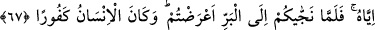
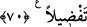

İNSANOĞLU
ÇOK NANKÖRDÜR
66. Rabbiniz, lütfuna nâil olmanız için denizde gemileri sizin için yüzdürendir.
Doğrusu O, sizin için çok merhametlidir.
67. Denizde başınıza bir musibet geldiğinde, O’ndan başka bütün yalvardıklarınız
kaybolup gider. O sizi kurtarıp karaya çıkardığında, (yine eski hâlinize) dönersiniz.
İnsanoğlu çok nankördür.
68. O’nun, sizi kara tarafında yerin dibine geçirmeyeceğinden, yahut başınıza taş
yağdırmayacağından emin misiniz? Sonra kendinize bir koruyucu da bulamazsınız.
69. Yahut O’nun, sizi bir kez daha oraya (denize) gönderip üzerinize bir kasırga
yollayarak, inkâr etmiş olmanız sebebiyle sizi boğmayacağından emin misiniz?
Sonra, bundan dolayı kendinize (intikamınızı almak için) bizi arayıp soracak bir
destekçi de bulamazsınız.
70. Biz, hakikaten insanoğlunu şan ve şeref sâhibi kıldık. Onları, (çeşitli nakil
vâsıtaları ile) karada ve denizde taşıdık; kendilerine güzel güzel rızıklar verdik;
yine onları, yarattıklarımızın birçoğundan cidden üstün kıldık.
Her şeye kâdir ve hikmet sâhibi “Rabbiniz, lütfuna nâil olmanız için” O’nun
tarafından bir lütuf olan rızkı taleb etmeniz için “denizde gemileri sizin için”
faydalanmanız için “yüzdürendir.” Yâni kâmil kudretiyle sevk eden, yürütendir. el-
Kâmûs’ta der ki: ‘el-Bahr’ çok su demektir.